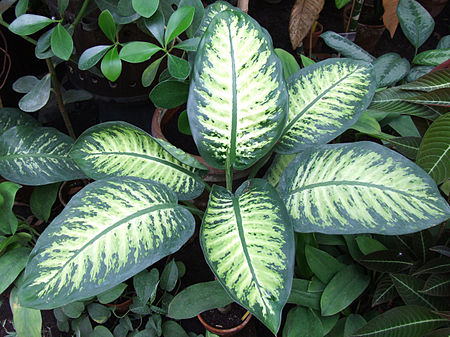

Dieffenbachia

Location
It is native to the New World Tropics from Mexico and the West Indies south to Argentina. Some species are widely cultivated as ornamental plants, especially as houseplants, and have become naturalized on a few tropical islands.
Cultivation
With a minimum temperature of 5 °C (41 °F), dieffenbachia must be grown indoors in temperate areas. They need light, but filtered sunlight through a window is usually sufficient. They also need moderately moist soil, which should be regularly fertilized with an appropriate houseplant fertilizer. Leaves will periodically roll up and fall off to make way for new leaves. Yellowing of the leaves is generally a sign of problematic conditions, such as a nutrient deficiency in the soil. Dieffenbachia respond well to hot temperatures and dry climates.
Dieffenbachia prefer medium sunlight, moderately dry soil and average home temperatures of 62–80 °F (17–27 °C). Most require water about twice a week.[9]
As Dieffenbachia seguine comes from the tropical rain forest, it prefers to have moisture at its roots, as it grows all the time, it needs constant water, but with loose well aerated soils.
Toxicology
The cells of the Dieffenbachia plant contain needle-shaped calcium oxalate crystals called raphides. If a leaf is chewed, these crystals can cause a temporary burning sensation and erythema. In rare cases, edema of tissues exposed to the plant has been reported. Mastication and ingestion generally result in only mild symptoms.[14] With both children and pets, contact with Dieffenbachia (typically from chewing) can cause a host of unpleasant symptoms, including intense numbing, oral irritation, excessive drooling, and localized swelling.[15] However, these effects are rarely life-threatening. In most cases, symptoms are mild, and can be successfully treated with analgesic agents,[16] antihistamines,[17] or medical charcoal.[18][19]
Severe cases can occur if Dieffenbachia makes prolonged contact with oral mucosal tissue. In such cases, symptoms generally include severe pain which can last for several days to weeks. Hospitalization may be necessary if prolonged contact is made with the throat, in which severe swelling has the potential to affect breathing.
Gastric evacuation or lavage is seldom indicated.[18] In patients with exposure to toxic plants, 70% are children younger than 5 years.